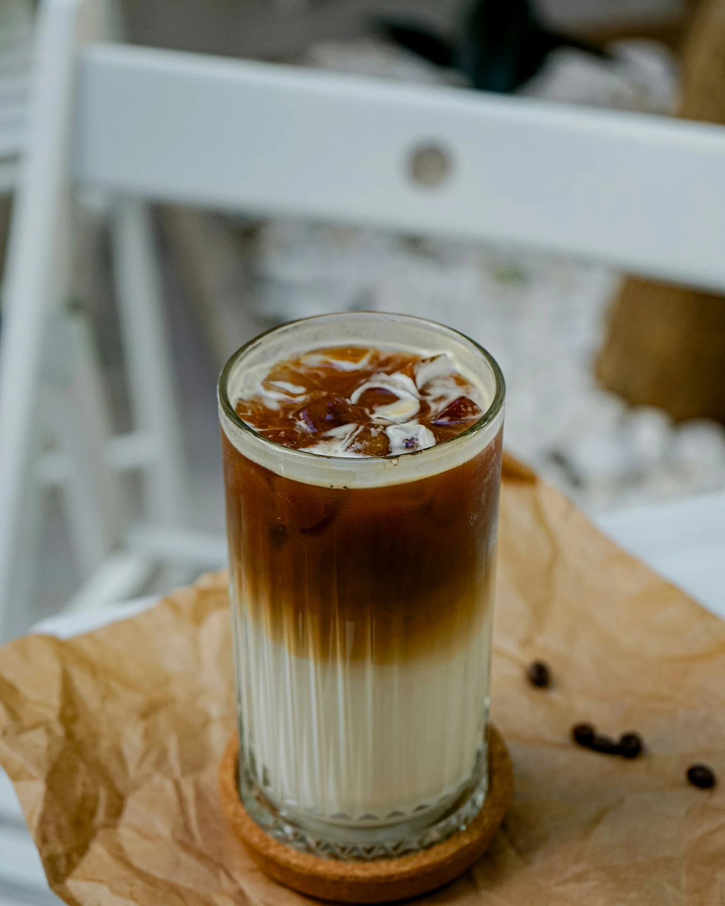

A guide for the curious
Good coffee
starts with
a story.
จากต้นทางของเมล็ดกาแฟ ไปจนถึงแก้วโปรดใบถัดไป เริ่มค้นพบเรื่องราวของกาแฟในแบบของคุณ
CG10 สายพันธุ์ · 20 เมนูกาแฟ
สองเส้นทางเริ่มต้นที่นี่
สองเส้นทางเริ่มต้นที่นี่

Choose your path
Where to begin?
เลือกเรื่องที่อยากรู้ แล้วค่อย ๆ สำรวจไปทีละแก้ว